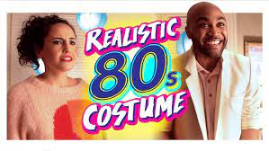
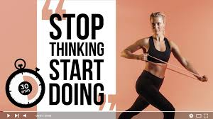

Curve and its Representation in Computer Graphics Explained
5 Minutes Engineering19K views 9 months ago

GET UP AND MAKE IT HAPPEN - Motivational Speech
Ben Lionel Scott2M views 10 months ago
.jpg)
10 Marketing Strategies Guaranteed to Grow ANY Business (PROVEN & PROFITABLE)
Tatum Blakeney95K views 4 months ago


How To Make Professional Thumbnails For YouTube Videos (2022)
Aksh Verma3.2M views 2 years ago


Healthy Food Recipes
5 Minutes Cook2M views 6 months ago
.jpg)
Teddy Swims - You're Still The One (Shania Twain Cover)
Teddy Swims111M views 3 years ago 

Wearing 80s VINTAGE for a WEEK *Embarrassing but Worth it*
HopeScope819K views 4 months ago 
.jpg)
20 min Fat Burning Workout for TOTAL BEGINNERS (Achievable, No Equipment)
Morning Fit6.4M views 7 months ago
37 KILLS!! NEW WORLD RECORD🔥SOLO vs SQUAD | Pubg Mobile
Munno Gaming1.3M views 9 months ago

FULL CHICKEN ROAST | Whole Fried Chicken | Free Range Chicken Recipe
We serve good food2M views 11 months ago
Mozzarella Chicken | Mozzarella Chicken Recipe
Yum39K views 4 years ago
Easy Vegan Recipes For Kids
I'M Foody1.1M views 5 months ago